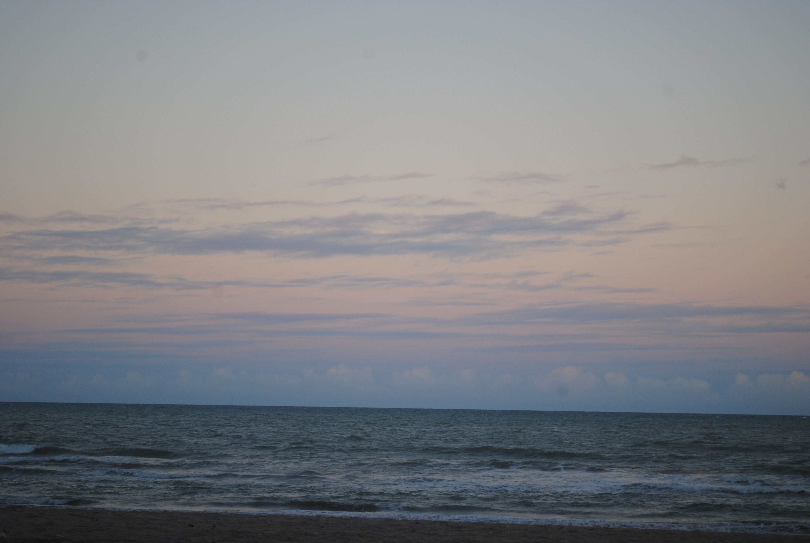

Sobre o projeto
Este portfólio fotográfico foi criado como um projeto de estudo em HTML e CSS, unindo meu interesse por fotografia, criatividade e desenvolvimento front-end. A proposta é apresentar registros autorais em uma página simples, responsiva e visualmente organizada, praticando estrutura de página, composição visual e experiência do usuário.
O que aprendi
Principais conceitos praticados neste projeto
HTML semântico
Organizei a página em seções como início, sobre, galeria e contato.
CSS visual
Trabalhei com cores, espaçamentos, imagem de fundo, botões e sombras.
Galeria responsiva
Criei uma galeria visual com imagens organizadas em um layout flexível.
Galeria
Alguns registros selecionados



Contato
Projeto desenvolvido por Camila Rosa, estudante de Sistemas para Internet, como parte da construção do meu portfólio em desenvolvimento front-end. A proposta une fotografia autoral, organização visual e prática com HTML e CSS.
Ver GitHub Ver LinkedIn